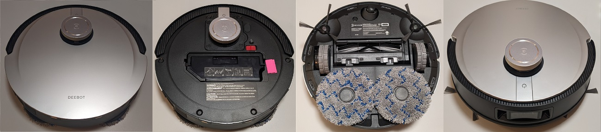

Ecovacs X1 Omni
ACTIVE

ModelID: ecovacs.x1.omni
Codename: zj2102-x3-t10
SKU:
OEM: Ecovacs
Firmware format: signed, encrypted
Sound format:
SOC: Horizon X3M (4x)
RAM: 1 GByte (DDR4)
Flash: 512MByte SPI-NAND
MCU: GD32F103VCT6
WiFi: FN-Link 6223a
OS: Linux (4.14.x)
Released: Q2/2022
Features
LIDAR: y
Camera: y
Mop: y (rotating)
Waterpump: y
Towerbumper: y
IR dropsensors: 6x
IR sidesensors: y
Frontsensor: Cameras,Linelaser
Carpetsensor: y (ultrasonic)
Brush type: rubber+brush
Cloud support: , ecovacs
Rootability
Root supported? : ()
Root method public? : n
Root complexity:
Valetudo support: n
Ressources
released Firmwares
FCC ID: 2AZAT-DEX11
Compatible Basestations: CH2013
TÜV privacy certification: y
Show a price history from Keepa.com (click here! will load external media)
Buy on Amazon.com (affiliate link*)
Buy on Amazon.de (affiliate link*)
Buy on Amazon.fr (affiliate link*)
Buy on Amazon.it (affiliate link*)
Buy on Amazon.es (affiliate link*)
* We are Amazon affiliate partner and might get a provision. Please verify the exact device name and type before purchasing!
Comments
Has Microphone. Has 2 sidebrushes. Same robot as X1 Turbo, but different base station. WARNING: The base station is voltage dependant only. Operation of the 110V base station in a region with 220V will make the auto empty fan explode!
Firmwares
| Type | MD5 | Filename | Version | Datetime | Size | Regions |
| app | b799b937f426a3e64fc7d4107a6675c8 | zj2102-x3-t10_zj2216_fw-2.3.9.bin | 2.3.9 | 2022-11-22 08:12:00 | 170,849 MB | gl |
Changelogs
These logs are extracted from official firmware releases. They might or might not contain useful information.
| Type | Version | Datetime | Changelog |
| app | 2.3.9 | 2022-11-22 08:12:00 | What’s new:
1.Added "Corner Deep Cleaning" function
2.Added pet poop avoidance
3.Added pet supplies identification
4.Supported to use "Hosted Mode" by voice commands
5.Bug fixes and user experience enhancements
Please upgrade to the latest version(V2.3.7) of App to experience the above features. |
You miss a device here and feel generous? Check out the Donations page here ;)
<-- Back to the overview
This information is collected over time by my rooted devices and stored in a database. There might be firmware older than this, but it is not listed here as I did not own a particular device at that time. There is no guarantee for accuracy of this information, as the availability of firmware might be device specific and region specific. Sometimes I don't have enough devices to cover all regions.
Note: If you use information from this table, please reference it, eg. "Dennis Giese, Robotinfo, https://robotinfo.dev".
Please contact me prior using any of the images.{kind=link}